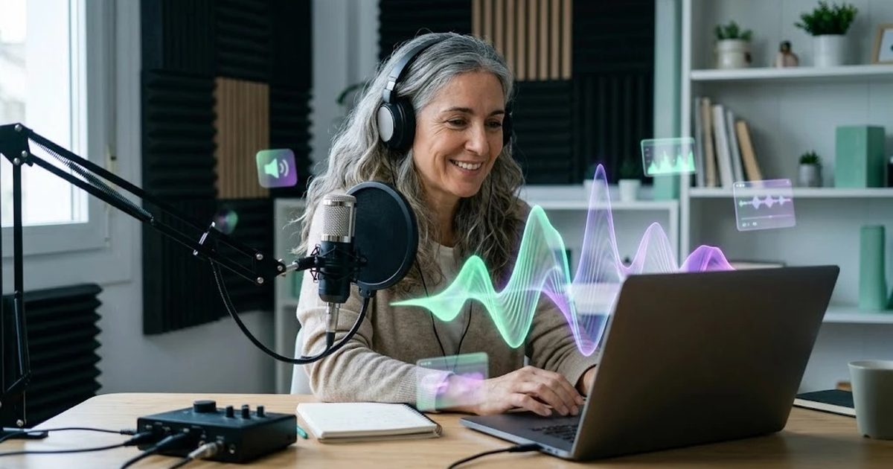

Generar una locución profesional solía requerir contratar a un locutor y reservar un estudio de grabación. Hoy, herramientas de síntesis de voz con IA producen resultados sorprendentemente naturales en minutos, lo que ha abierto esta posibilidad a negocios pequeños que antes no podían permitirse locuciones profesionales para cada vídeo o presentación.
ElevenLabs: la referencia en calidad de voz
ElevenLabs se ha convertido en el nombre más asociado a la generación de voz con IA, gracias a la naturalidad de su entonación y su capacidad de transmitir matices emocionales —una voz calmada, entusiasta o seria, según lo que necesites. Ofrece una biblioteca de voces predefinidas y, en planes superiores, la posibilidad de clonar una voz propia a partir de una muestra de audio.
Cuándo usar voz generada con IA
- Locuciones para vídeos de producto o explicativos, donde el coste de contratar un locutor por cada actualización no se justifica.
- Contenido de formación interna, donde la naturalidad es menos crítica que en un anuncio público.
- Prototipos y pruebas antes de decidir si vale la pena invertir en una grabación profesional definitiva.
- Audiolibros o contenido narrado de larga duración, donde grabar todo con voz humana sería muy costoso.
Buenas prácticas y consideraciones éticas
La capacidad de clonar voces trae responsabilidades. Usa siempre tu propia voz (con tu consentimiento) o voces con licencia clara de la herramienta. Nunca clones la voz de otra persona sin su permiso explícito, y si publicas contenido con voz sintética de cara al público, considera si es apropiado indicarlo, especialmente en contextos donde la autenticidad importa, como testimonios o comunicaciones oficiales.
Cómo obtener mejores resultados
La calidad del resultado depende del texto que le des a leer: frases demasiado largas o con puntuación confusa pueden generar entonaciones extrañas. Escribe el guion pensando en cómo sonaría hablado, con pausas naturales marcadas por la puntuación, y revisa siempre el resultado antes de usarlo en algo público.
Un caso práctico
Una academia online de idiomas necesita locuciones para 40 vídeos cortos al trimestre. Graba ella misma las introducciones, para mantener la cercanía, y usa una voz sintética de calidad para los ejercicios repetitivos. Antes de pagar, prueba con los créditos gratuitos que la voz elegida suena natural en español de España. Ejemplo ilustrativo.
Si estás valorando la herramienta más conocida de esta categoría, lee nuestra reseña de ElevenLabs: calidad de voz, precios e idiomas.
¿Necesitas también editar el vídeo final?
Una vez tengas la locución lista, revisa nuestra comparativa de las mejores herramientas de IA para editar vídeo.
Leer más →Idiomas y acentos: qué esperar
La calidad de la síntesis de voz no es uniforme entre idiomas. En español, además, existen variaciones regionales notables de acento y vocabulario entre España y los distintos países de Latinoamérica, y no todas las herramientas ofrecen la misma variedad de voces para cada variante. Si tu audiencia es de una región concreta, prueba varias voces disponibles antes de decidir, porque un acento que no encaja con tu audiencia puede sonar extraño incluso si la calidad técnica es alta.
Para negocios que se comunican en varios idiomas, otra ventaja práctica de estas herramientas es que generar la misma locución en distintos idiomas no requiere contratar a un locutor distinto para cada uno: puedes mantener consistencia de tono entre versiones usando la misma herramienta, ajustando solo el idioma y revisando que la naturalidad se mantenga en cada versión.
Cuándo la voz humana sigue siendo mejor opción
Para el vídeo principal de presentación de tu marca, un anuncio de televisión o cualquier pieza donde la voz se convierte en parte de la identidad de marca a largo plazo, contratar a un locutor profesional sigue teniendo sentido: aporta una personalidad reconocible y consistente que refuerza el reconocimiento de marca con el tiempo, algo que una voz sintética genérica difícilmente iguala.
Preguntas frecuentes
¿Qué tan realista suena una voz generada con IA hoy en día?
Con herramientas como ElevenLabs, el resultado puede sonar muy cercano a una voz humana, incluyendo matices de entonación y emoción, especialmente en idiomas bien soportados como el español o el inglés.
¿Puedo clonar mi propia voz con IA?
Sí, varias herramientas permiten crear un clon de voz a partir de una muestra de audio tuya, aunque suele requerir tu consentimiento explícito y, dependiendo del proveedor, verificación adicional para evitar usos indebidos.
¿Es legal usar voces generadas con IA en contenido comercial?
Generalmente sí, si usas voces con licencia de la propia herramienta o tu propia voz clonada con permiso. Lo que no es legal ni ético es clonar la voz de otra persona real sin su consentimiento para hacerla decir algo que no dijo.
¿Para qué se usa más la generación de voz con IA en negocios pequeños?
Los usos más habituales son locuciones para vídeos de producto, audios para presentaciones, contenido de formación interna y prototipos rápidos de anuncios antes de grabar con una voz humana real.
Escrito y revisado por el equipo editorial de HerramientasIA. No tenemos acuerdos comerciales con las herramientas mencionadas. ¿Ves un dato desactualizado? Avísanos.